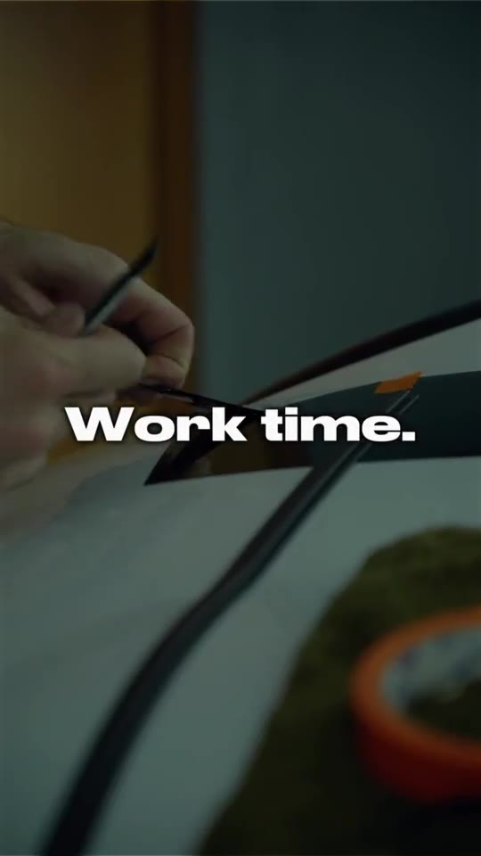

ЗАЩИТНАЯ ПЛЁНКА
Визуальная концепция. Фотографии реальных работ появятся после согласования.
Внешний вид — это характер. Защитные и цветные плёнки, полировка, покрытие кузова и индивидуальные решения для автомобиля.
От защиты лакокрасочного покрытия до индивидуального стайлинга, оптики и салона. У нас 14 направлений работ — подбираем решение под вашу задачу.
ВСЕ 14 УСЛУГ
Современные плёнки, продуманные решения и внимание к качеству исполнения — от первого обсуждения до завершения работ.
ПОДОБРАТЬ УСЛУГУКадры предоставленного видеоролика используются как фоновое оформление сайта.Здесь будут опубликованы фотографии реальных автомобилей после согласования. Пока показываем направления работы без вымышленных кейсов.
Визуальная концепция. Фотографии реальных работ появятся после согласования.
Визуальная концепция. Фотографии реальных работ появятся после согласования.
Визуальная концепция. Фотографии реальных работ появятся после согласования.
Защитные, цветные, тонировочные и архитектурные плёнки. Цены и наличие уточняются индивидуально.
Полиуретановая прозрачная плёнка для кузова.
Матовый финиш с защитными свойствами.
Цвет и защита в одном материале.
Изменение цвета и визуального образа.
24/38 — детейлинг, оклейка и магазин автомобильных плёнок в Красноярске. На сайте собраны направления обслуживания автомобиля и материалы, доступные для подбора по запросу.
Два филиала для связи и обсуждения работ. Итоговые условия, стоимость и сроки уточняются у специалистов.
Позвоните в удобный филиал или постройте маршрут. Адреса и телефоны предоставлены владельцем студии.
Красноярск, ул. Высотная, 2, строение 2.
График работы уточняется.
Красноярск, ул. Алексеева, 13.
График работы уточняется.
Две точки в Красноярске. Выберите филиал, чтобы посмотреть расположение, позвонить или построить маршрут.
Карта основана на OpenStreetMap. Адреса и телефоны предоставлены студией. Для строения на Высотной положение маркера ориентировочное — уточняйте маршрут по полному адресу в 2ГИС.
Выберите филиал для звонка. Для удобства можно подготовить и скопировать текст обращения — заявка не отправляется автоматически.